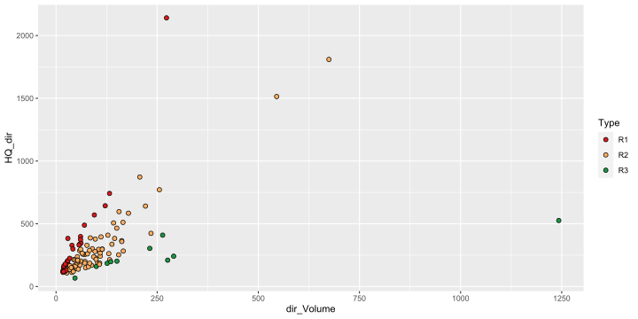

This package provides tools for:
remotes::install_github(repo = "PhilippBuehler/FloodR")
library("FloodR")For the separation of flood events from a discharge timeseries, we need the daily discharge.
# Create a data.frame with continuous daily discharge
dailyMQ <- data.frame(Date=seq(from=as.Date("01.01.2000", format="%d.%m.%Y"),
to=as.Date("01.01.2004", format="%d.%m.%Y"), by="days"),
discharge=rbeta(1462,2,20)*100)
#Run the separation
Flood_events <- eventsep(dailyMQ)
# The Separation might still contain overlaid flood events which need to be corrected
head(Flood_events)
# Begin End Peak_date DailyMQ Volume dir_Volume
# 1 2000-01-16 2000-01-19 2000-01-18 15.35592 3.021114 2.174865
# 2 2000-02-13 2003-12-29 2001-09-28 44.27642 1075.325974 534.077564
# 3 2000-05-23 2000-06-02 2000-05-31 15.73240 4.941116 4.224436
# 4 2000-06-06 2000-06-10 2000-06-08 15.48383 2.875110 1.896021
# 5 2000-06-19 2000-08-02 2000-07-26 25.61361 38.245501 32.558629
# 6 2001-04-18 2001-05-14 2001-05-03 20.11446 17.395686 12.098132
# baseflow_peak baseflow_begin baseflow_end No_Peaks HQ HQ_dir Comments
# 1 3.5861595 2.3009200 4.228779 1 NA NA
# 2 4.3944127 4.2247479 4.629597 73 NA NA
# 3 0.9831886 0.5733279 1.085654 1 NA NA overlaid
# 4 2.8330141 1.5119888 4.154039 1 NA NA overlaid
# 5 2.1499803 0.5366202 2.455211 4 NA NA overlaid
# 6 2.6180248 0.6696508 4.046832 1 NA NA overlaidRun the Web separation on the dummy Catchment As input to the function a minimum of discharge data is used. The Flood event tables can be opened from within the User-Interface
After the flood events are corrected (if needed), the precipitation belonging to flood event need to be estimated For the both functions, a daily precipitation timeseries is needed, as well as the parameter indT, which has the position indices of begin, end and peak of the FLOOD event as vector.
# create a sample dataset
dailyprec <- data.frame(Date=seq(from=as.Date("01.01.2000", format="%d.%m.%Y"),
to=as.Date("30.04.2000", format="%d.%m.%Y"), by="days"),
discharge=rbeta(121,2,20)*100)
# Create indices of beginning, end and peak of the flood event
indT <- c(15, 30, 14+which.max(dailyprec[15:30,2]))
# Run the separation for both methods
Date1 <- PreconeCP(dailyprec, indT = indT)
Date2 <- PrectwoCP(dailyprec, indT = indT)
print(c("Method1" = Date1, "Method2" = Date2))
# Method1 Method2
# "2000-01-08" "2000-01-08"For the typing of the flood event, multiple characteristics for each flood event must be calculated before:
# Open the sample flood event data
data("Sample_Flood_events")
head(Sample_Flood_events)
# Begin End Peak_date Sum_SM Sum_N dir_Volume HQ_dir PSI_SM
# 1 1950-02-10 1950-02-14 1950-02-11 0.73 14.81 18.45 146.02 0.22
# 2 1951-01-18 1951-01-26 1951-01-20 1.37 38.45 26.56 108.25 0.12
# 3 1952-09-12 1952-09-18 1952-09-14 0.09 68.45 22.05 142.18 0.06
# 4 1953-01-28 1953-02-11 1953-01-30 28.68 52.64 124.25 353.18 0.28
# 5 1953-02-19 1953-03-04 1953-02-23 17.05 6.27 113.31 209.12 0.89
# 6 1954-07-08 1954-07-24 1954-07-10 0.09 197.43 545.35 1513.91 0.50
# TQDir SM_rel HQ
# 1 35.10 0.05 171.622
# 2 68.15 0.03 130.075
# 3 43.08 0.00 167.398
# 4 97.72 0.35 399.498
# 5 150.51 0.73 241.032
# 6 100.06 0.00 1676.301
# Run the event typing
Floods_typed <- Flood_typology(Floods = Sample_Flood_events, n_G = 3, Type_3_min_samplesize = 10)
table(Floods_typed$Type)
#
# R1 R2 R3 S1 S2
# 30 74 10 26 9
# Plot the event typing
Floods_Rain <- Floods_typed[Floods_typed$Type %in% c("R1", "R2", "R3"),]
suppressMessages(library(ggplot2))
ggplot(Floods_Rain)+
geom_point(aes(x=dir_Volume, y=HQ_dir, fill=Type), colour="black", shape=21, size=2)+
scale_fill_manual(values = c("R1"="#D7191C", "R2"="#FDAE61", "R3"= "#1A9641"))
For the TMPS model, multiple characteristics for each flood event must be present in the input Floods_typed:
Also, a daily discharge timeseries with a “Date” and “Discharge” column is needed
# Open the discharge data
data("Discharge")
head(Discharge)
# Date Discharge
# 1: 1950-01-01 144.2951
# 2: 1950-01-02 140.8438
# 3: 1950-01-03 143.0167
# 4: 1950-01-04 151.4559
# 5: 1950-01-05 145.1900
# 6: 1950-01-06 141.6746
Floods_typed <- Floods_typed[, c("Peak_date","HQ", "Type")]
TMPS_quantiles <- qTMPS(p = c(2, 5, 10, 20, 25, 50, 100, 200, 500, 1000),
Flood_events = Floods_typed, Daily_discharge = Discharge,
return_TMPS = c("TMPS", "R1", "R2", "R3", "S1", "S2"))
TMPS_quantiles <- as.data.frame(round(TMPS_quantiles,1))
TMPS_quantiles[TMPS_quantiles < 0] <- NA
TMPS_quantiles
# 2 5 10 20 25 50 100 200 500 1000
# TMPS 549.5 708.3 897.9 1259.6 1397.7 1911.5 2586.8 3479.1 5122.4 6853.7
# R1 68.0 236.4 403.4 623.7 709.3 1033.1 1468.9 2056.7 3160.7 4341.5
# R2 162.7 402.2 616.3 876.4 972.3 1316.2 1743.8 2277.1 3190.5 4083.8
# R3 NA NA NA NA 165.2 457.7 571.7 616.5 637.2 642.4
# S1 382.8 472.9 518.2 553.2 562.9 588.9 610.0 627.2 645.1 655.8
# S2 NA NA 286.4 525.6 571.6 661.7 705.6 727.2 740.0 744.2
# Calculate the AMS with TWO SIMPLIFICATIONS FOR EASYNESS :
# 1) no hydrological years
# 2) asummption instantaneous peaks == annual max of daily discharge * 1.1
AMS <- aggregate((Discharge$Discharge*1.1), list(as.numeric(format(Discharge$Date,"%Y"))), max, na.rm=TRUE)$x
# Plot the Results and compare it to the AMS
suppressMessages(library(fExtremes))
suppressMessages(library(reshape2))
suppressMessages(library(ggplot2))
AMS_params <- gevFit(AMS, type="pwm")@fit$par.ests
AMS <- qgev(1-1/c(2,5,10,20,25,50,100,200,500,1000), mu=AMS_params[2], xi=AMS_params[1], beta=AMS_params[3])
Results <- rbind(TMPS_quantiles, AMS=AMS)
Results <- cbind(Results, "Method" = rownames(Results))
Results_melt <- melt(Results, id.vars = "Method", variable.name = "Annuality")
Results_melt$Annuality <- as.numeric(as.character(Results_melt$Annuality))
cols <- c("AMS"="black",c(R1 = "#D7191C", R2 = "#FDAE61", R3 = "#1A9641", S1 = "#6BAED6", S2 = "#2171B5"), "TMPS"="darkorchid1")
ggplot(Results_melt)+
theme_bw()+
geom_line(aes(x=Annuality, y=value, colour = Method ), size=1.5)+
scale_color_manual(values=cols)+
scale_x_log10()+
labs(x="T[a]",y="Peak discharge [m³/s]")+
annotation_logticks(sides = "b")
# Warning: Removed 6 row(s) containing missing values (geom_path).
# Calculate
TMPS_probs_from_AMS_quants <- pTMPS(q = round(AMS),
Flood_events = Floods_typed, Daily_discharge = Discharge,
return_TMPS = c("TMPS", "R1", "R2", "R3", "S1", "S2"))
TMPS_probs_from_AMS_quants[is.infinite(TMPS_probs_from_AMS_quants)] <- NA
TMPS_probs_from_AMS_quants <- round(TMPS_probs_from_AMS_quants, 1)
TMPS_probs_from_AMS_quants
# 410 589 737 906 966 1174 1418 1706 2167 2590
# TMPS 1.8 2.4 6.3 10.2 11.6 17.2 25.8 38.7 66.5 100.3
# R1 10.2 18.2 26.8 39.0 44.0 64.0 93.1 135.7 223.2 325.8
# R2 5.1 9.2 14.0 21.5 24.6 38.2 59.8 94.6 175.4 282.4
# R3 42.3 122.0 NA NA NA NA NA NA NA NA
# S1 2.5 50.1 NA NA NA NA NA NA NA NA
# S2 13.4 27.6 369.3 NA NA NA NA NA NA NA